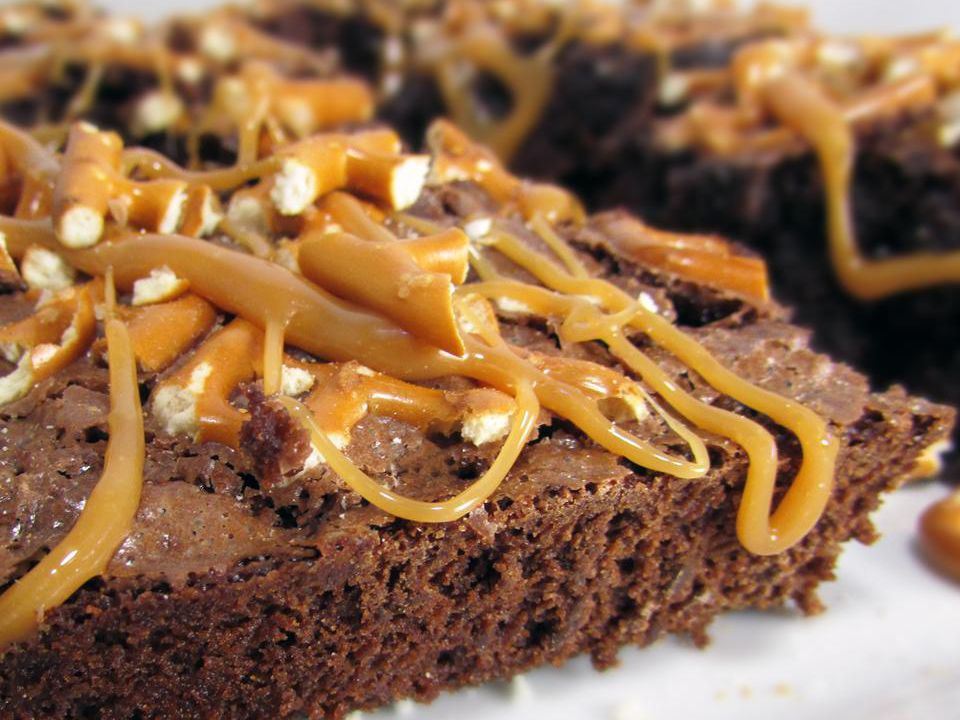

Caramel Pretzel Brownies

Description
If you love chocolate, caramel, and pretzels mixed together, you'll love these pretzel brownies. If you have a good caramel recipe, use it; it would sure beat unwrapping all of the caramel candies! The same goes if you have a great brownie recipe.
Ingredients
- 1 (14 ounce) bag individually wrapped caramels, unwrapped, divided
- 1 (18.3 ounce) package fudge brownie mix (such as Betty Crocker®)
- ½ cup vegetable oil
- ¼ cup water
- 2 large eggs
- ¼ cup unsalted butter
- 1 tablespoon milk
- 1 cup chopped pretzels
- ¾ cup chocolate chips
- ⅓ cup chocolate-covered toffee bits
Steps
- Preheat the oven to 350 degrees F (175 degrees C). Grease a 9x13-inch baking dish. Cut 9 caramels in half.
- Beat brownie mix, vegetable oil, water, and eggs in a bowl until well combined. Pour batter into the prepared baking dish. Press three rows of 6 caramel halves into the brownie batter so there will be one in the center of each brownie.
- Bake in the preheated oven until a toothpick inserted into the center comes out almost clean, 25 to 30 minutes. Remove from the oven.
- Combine remaining caramels, butter, and milk in a microwave-safe, glass or ceramic bowl. Microwave in 30-second intervals, stirring after each interval, until melted, 1 to 3 minutes (depending on your microwave).
- Pour caramel mixture over warm brownies. Scatter pretzels, chocolate chips, and toffee bits over top. Cool for 20 minutes before cutting into 18 squares.
Home